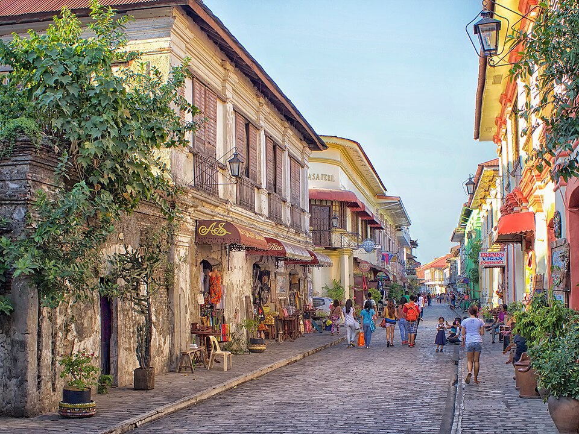
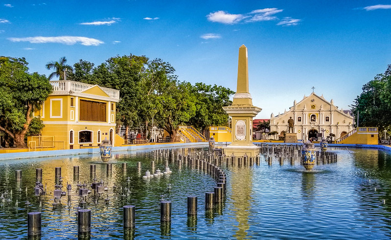

Vigan City, Ilocos Sur

Vigan, located in the province of Ilocos Sur on the western coast of Luzon, is one of the best-preserved Spanish colonial towns left in Asia. Designated as a UNESCO World Heritage Site, the city is a living museum where centuries-old architecture, cobblestone streets, and horse-drawn carriages transport visitors back to the 16th century.

St. Paul Metropolitan Cathedral, commonly known as the Vigan Church, is one of the most prominent architectural and spiritual landmarks in the Philippines. Located at the heart of the UNESCO World Heritage city of Vigan in Ilocos Sur, the cathedral stands as a testament to the region's rich colonial history and remarkable resilience against natural disasters.